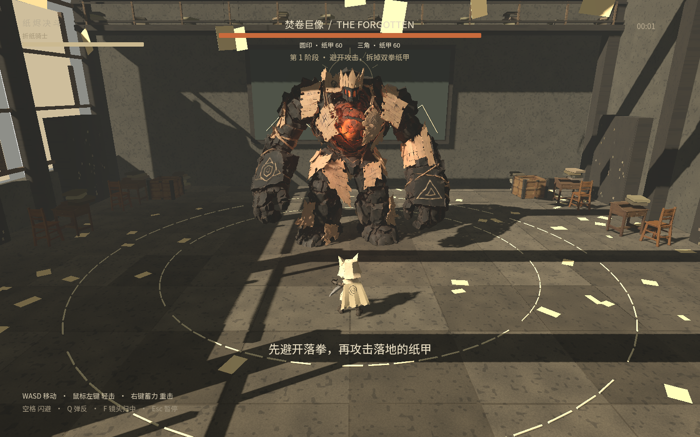

PAPER & EMBER · PLAYABLE PROTOTYPE
纸烬决斗
一页未尽，余烬不息。
踏入遗忘的教室，引出重拳，撕开纸甲，击碎燃烧的核心。扮演折纸骑士，挑战焚卷巨像。
网页试玩请使用电脑和键盘鼠标，首次进入需要下载游戏资源。暂未适配手机触屏；下载版可离线运行。

一页未尽，余烬不息。
踏入遗忘的教室，引出重拳，撕开纸甲，击碎燃烧的核心。扮演折纸骑士，挑战焚卷巨像。
网页试玩请使用电脑和键盘鼠标，首次进入需要下载游戏资源。暂未适配手机触屏；下载版可离线运行。
